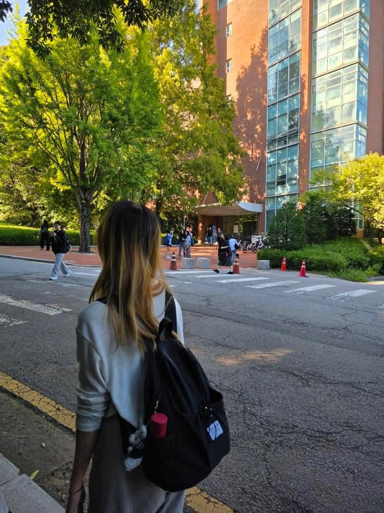

대학 이야기
학교에서 수업이 끝나고 마지막 수업을 들으러 가는 길이었다. 오르막길이라 힘들게 걷고 있었는데 친구가 뒷모습을 찍어주었다. 학교에서 찍은 몇 안 되는 내 사진이라 나름 의미가 있다. 뒤에 학교도 햇빛에 비치는 모습이 예쁘게 나온 것 같다.
저의 일상을 소개하는 블로그입니다.
학교에서 수업이 끝나고 마지막 수업을 들으러 가는 길이었다. 오르막길이라 힘들게 걷고 있었는데 친구가 뒷모습을 찍어주었다. 학교에서 찍은 몇 안 되는 내 사진이라 나름 의미가 있다. 뒤에 학교도 햇빛에 비치는 모습이 예쁘게 나온 것 같다.
집에서 엄마가 그림을 그릴 때 옆에 앉아 따로 제가 그린 그림이다. 스케치 없이 오직 물감으로만 그린 그림이라 재밌으면서도 조금 어려웠다. 입시가 끝난 후 이 날 붓을 처음 잡아서 어색해서 어려웠던 것 같기도 하지만, 나름 재밌었다.
사진에는 디저트가 메인인 것 같지만, 사실 먹으려고 만난 게 아니라 과제하려고 만난 것이다. 과제할 때는 서로 집중하느라 중간에 찍은 사진은 없다. 보통 과제 시작하기 전에 음료수를 받았을 때 사진만 찍고, 음료수를 마시면서 열심히 집중해서 과제를 해치운다.
같이 입시를 한 친구와 서울숲과 성수에서 놀고 집 가는 길에 찍은 사진이다. 먼저 서울숲에서 놀다가 성수까지 걸어가 또 놀았다. 놀 때는 정말 즐거웠지만, 둘 다 하루 종일 놀고 지쳐서 사진을 자세히 보면 조금 지쳐 보일 수도 있다.
어린이공원역에 위치한 '카츠 헤세드'에 다녀왔다. 대학교 친구들과 함께 간 곳인데, 정말 맛있었다. 특히 카츠산도를 이때 처음 먹어봤는데, 정말 맛있었다.
원래 라멘은 항상 느끼해서 다 먹기 힘들었는데, 매운 라멘을 먹고 나서부터는 맛있게 잘 먹게 되었다. 혹시 많이 매울까 봐 기본 돈코츠 라멘만 시켜 먹었었는데, 매운 라멘이 느끼함도 별로 없어서 맛있었다.
햄버거도 원래 야채를 별로 좋아하지 않아 양상추만 먹었는데, 이 햄버거 가게는 양파도 빼지 않고 먹을 정도로 맛있었다. 물론 양파가 두 개 들어간다고 해서 한 개만 넣어달라고 했지만, 그래도 정말 맛있었다.
친구들과 과제를 하면서 먹었다. 딸기 타르트가 너무 예쁘게 생겨서 안 시킬 수가 없었다. 타르트와 곶감으로 만들어진 간식은 친구들과 나눠 먹었다.
여기는 음료수도 좋았지만, 자리가 굉장히 편했다. 소파 자리여서 편하게 기대 친구들과 수다를 떨었다. 친구의 아이스크림도 한입 뺏어 먹었다.
여기서는 바닐라 아이스크림이 들어간 커피를 시켰다. 예전에 친구가 시켰을 때 한입 뺏어 먹은 적이 있는데 굉장히 맛있어서, 두 번째 방문 때 친구가 시켰던 메뉴로 시켜서 먹었다. 역시 음식은 한입만 먹는 게 더 맛있는 것 같다.
그때그때 상황에 따라 듣는 노래들이다.